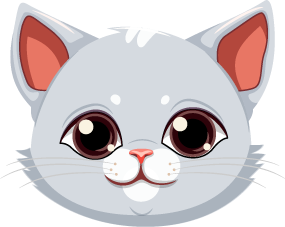
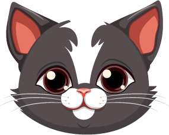

Taman Margasatwa Ragunan atau juga disebut Kebun Binatang Ragunan adalah sebuah kebun binatang yang terletak di daerah Ragunan, Pasar Minggu, Jakarta Selatan, Indonesia. Kebun binatang seluas 140 hektare ini didirikan pada tahun 1864.
Taman Langsat adalah taman yang berada di di Jalan Langsat Kebayoran Baru Jakarta Selatan, di belakang Pasar Burung Barito. Taman ini mempunyai luas lahan seluas 3,6 hektar.
Masjid Ramlie Musofa terletak di Jakarta Utara, Daerah Khusus Ibukota Jakarta. Masjid ini mulai dibangun pada 2011 oleh keluarga Ramli Rasidin dan diresmikan pada Mei 2016 oleh Prof. Dr. Nasaruddin Umar.
Kopi Nako Daur Baur yang terletak di kawasan Senayan Park Jakarta Selatan. Mengusung konsep daur ulang, terlihat susunan bekas cup atau gelas plastik yang dirangkai menjadi elemen dinding.
Tradisi kondangan menjadi sarana penting dalam melestarikan keberagaman budaya di Indonesia. Selain itu, kondangan juga menjadi ajang silaturahmi antara warga setempat, terutama ketika acara tersebut dihadiri oleh tamu dari berbagai daerah atau keluarga yang jarang bertemu.